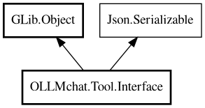

Interface
Object Hierarchy:

Description:
public abstract class Interface : Object, Serializable
Abstract base class for tools that can be used with Ollama function calling.
This class contains all the implementation logic. Subclasses must implement the abstract properties. The Function class is built from
Tool's properties on construction.
Content:
Properties:
Creation methods:
Methods:
- protected abstract RequestBase? deserialize (Node parameters_node)
Abstract method for tools to deserialize parameters into a Request
object.
- public virtual async string execute (Chat chat_call, Object parameters)
Public method that creates a Request and delegates execution to it.
- public unowned ParamSpec? find_property (string name)
- public Value get_property (ParamSpec pspec)
- protected void parse_parameter_description_string (string in_desc, HashMap<string,ParamObject> type_definitions)
Parses a single parameter description and adds it to the function's
parameters property.
- public Node serialize_property (string property_name, Value value, ParamSpec pspec)
- public void set_property (ParamSpec pspec, Value value)
Inherited Members:
All known members inherited from class GLib.Object
- @get
- @new
- @ref
- @set
- add_toggle_ref
- add_weak_pointer
- bind_property
- connect
- constructed
- disconnect
- dispose
- dup_data
- dup_qdata
- force_floating
- freeze_notify
- get_class
- get_data
- get_property
- get_qdata
- get_type
- getv
- interface_find_property
- interface_install_property
- interface_list_properties
- is_floating
- new_valist
- new_with_properties
- newv
- notify
- notify_property
- ref_count
- ref_sink
- remove_toggle_ref
- remove_weak_pointer
- replace_data
- replace_qdata
- set_data
- set_data_full
- set_property
- set_qdata
- set_qdata_full
- set_valist
- setv
- steal_data
- steal_qdata
- thaw_notify
- unref
- watch_closure
- weak_ref
- weak_unref
All known members inherited from interface Json.Serializable
- default_deserialize_property
- default_serialize_property
- deserialize_property
- find_property
- get_property
- list_properties
- serialize_property
- set_property